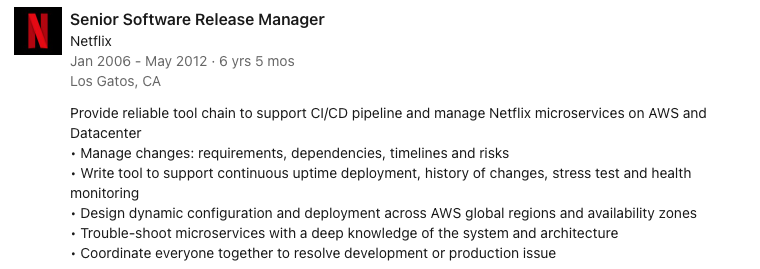
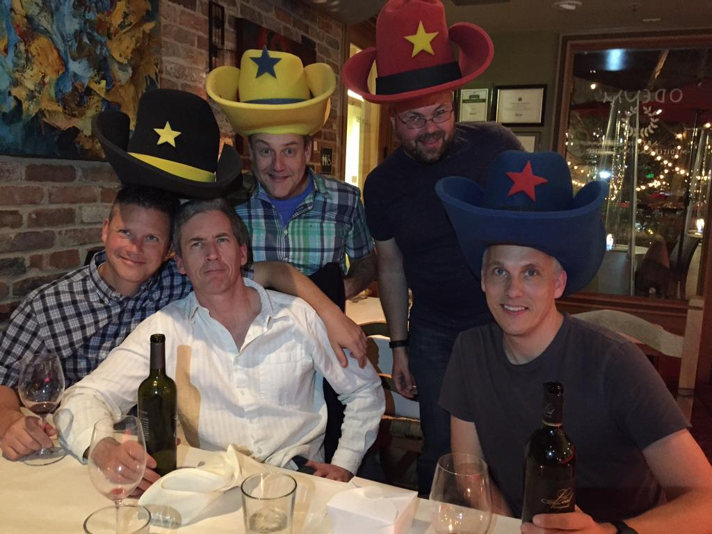
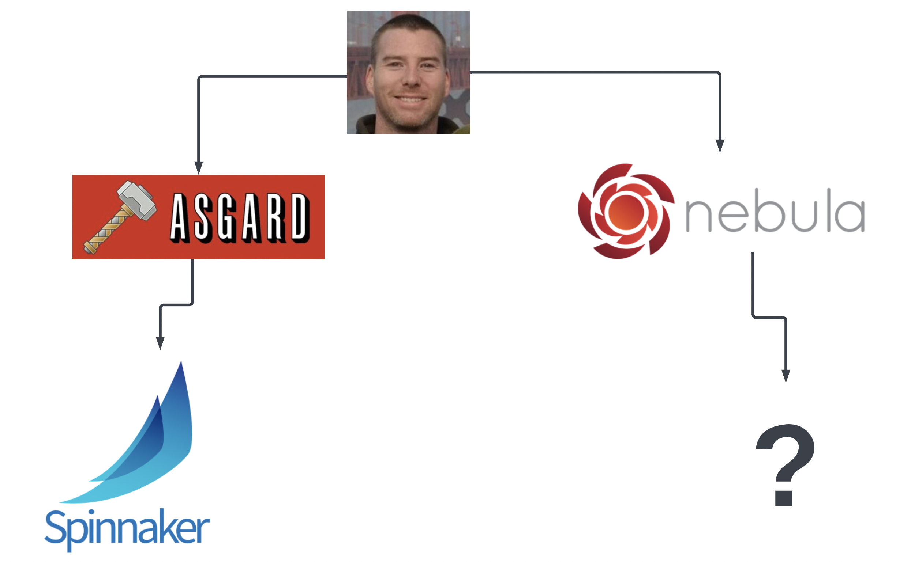
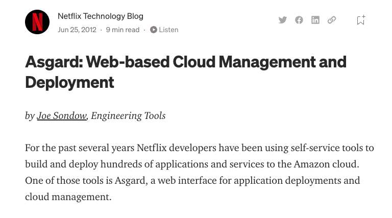
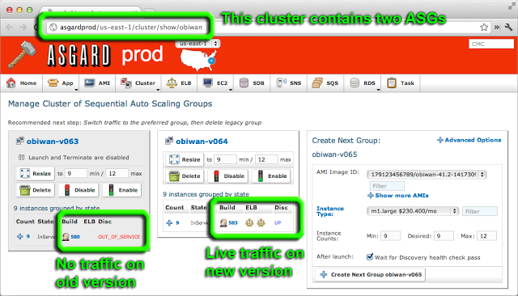
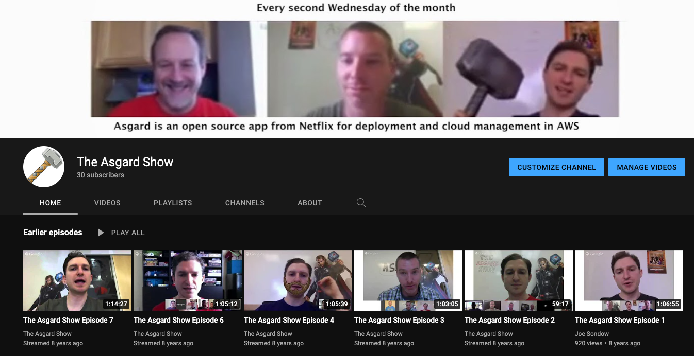
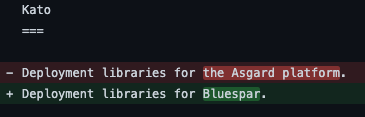
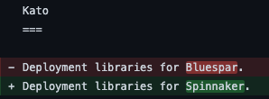
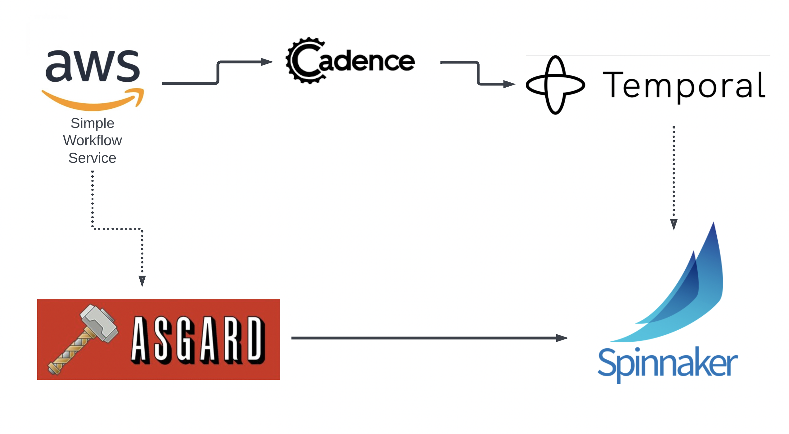

Hardcore Spinnaker History


Clay McCoy
Principal Software Engineer @ Armory (since Oct 2019)Netflix Application Console (NAC)

- Created by Vu in 2008
- Grails UI for AWS
- hid credentials
- activity logging
Netflix Application Console (NAC)

- Carls team took over NAC
- Joe Sondow worked on NAC full time

Asgard
- NAC rebranded as Asgard
- Grails monolith
- AWS only
- in memory tasks
- ran in datacenter
- cloud inventory
- enforce conventions
Asgard
- naming
- applications
- ASG usage
- clusters
- rolling push
- red/black
Asgard Show
Blue Spar
- improved REST API
- cloud native
- dogfood microservices
- mulit-cloud (no forking)
- long running workflows
- kato, oort, mort, orca
- initial AWS support is mostly code from Asgard
Spinnaker
- Asgard feature parity
- kato, oort, mort -> clouddriver
- orca: Spring Batch workflow originally
- executions and later pipelines
- SpeL expressions
- Halyard
- Rosco
- K8

- What did I work on?
- What did I learn?
- What innovations did I see?
- What did I work on? (2009)
- Grails deployment app
- What did I learn?
- Improvments to software delivery can have huge impacts to an organization
- What innovations did I see?
- Rails/Grails provided holistic structure for an app

- What did I work on? (2011)
- Asgard and Spinnaker
- What did I learn?
- Don't write your own workflow engine.
- What innovations did I see?
- freedom and responsibility
- red/black deployments
- What did I work on? (2016)
- SDLC eventing engine
- What did I learn?
- logic is best specified in code
- tradeoffs of representing a workflow dynamically in code rather than defined steps
- flexibility vs structure
- easy to extend, but hard to enforce consistency or insight (job progress for example)
- What innovations did I see?
- an extensible event-driven system backed by a data model
- https://github.com/sdd-manifesto/manifesto
- What did I work on? (2018)
- Canal pipelines as code. Artifactory integration.
- What did I learn?
- Company culture has a huge impact on Spinnaker success.
- What innovations did I see?
- deployable artifacts are the contract between a CI and CD system
- generating pipeline with defined steps with a dynamic programming language
- What did I work on? (2019)
- Plugins, Spinnaker release process, Astrolabe
- What did I learn?
- plugins systems have a spectrum of flexibility (dangerous but useful -> safe but pointless)
- an eventing lifecycle and accessible SDLC data are complementary to Spinnaker
- What innovations did I see?
- hard to judge lasting impact in the moment